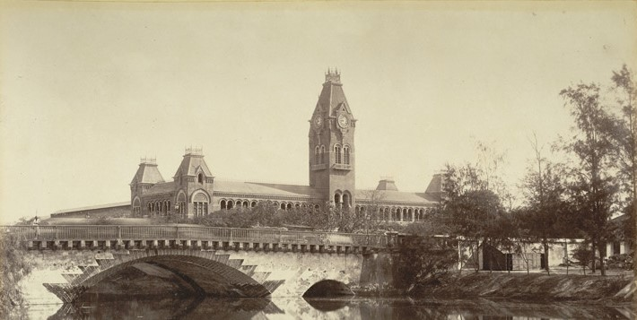

Chennai Central, erstwhile Madras Central, is the main railway terminus in the city of Chennai, formerly known as Madras. It lies adjacent to the current headquarters of the Southern Railway, as well as the Ripon Building, and is one of the most important railway hubs in South India.Chennai Central connects the city to New Delhi and prominent cities of India such as Ahmedabad, Bangalore, Bhopal, Coimbatore, Hyderabad, Jaipur, Kolkata, Lucknow, Mumbai, Patna, Varanasi, Thiruvananthapuram, and so forth.
Chennai Central serves as a symbolic landmark for people in South India as this station served as the main gateway for all people who travelled to South India during the British times. About 350,000 passengers use the terminus every day. Chennai Egmore, Coimbatore Junction and Chennai Central are the most profitable stations of Southern Railways. As per a report published in 2007 by the Indian Railways, Chennai Central and Secunderabad were awarded 183 points out of a maximum of 300 for cleanliness, the highest in the country
History
Marking the initial days of the railways in the Indian Subcontinent, the Madras Railway Company began to network South India in 1856. The first station was built at Royapuram, which remained the main station at that time. Expansion of the Madras Railways network, particularly the completion of the Madras–Vyasarpadi line, called for a second station in Madras, resulting in Madras Central coming into being
The station was built on the open grounds that had once been called John Pereira's Gardens, belonging to Joao Pereira de Faria (John Pereira), a Portuguese merchant in the port town of Negapatam (present day Nagapattinam) who settled in Madras in 1660.
In 1907, Madras Central was made the Madras Railway Company's main station. The station gained prominence after the beach line was extended further south in the same year, and Royapuram was no longer a terminus for Madras. All trains were then terminated at Madras Central instead. The Madras and Southern Mahratta Railway Company was formed in 1908 and took over the Central station from the Madras Railway Company. The station's position was further strengthened after the construction of the headquarters of the Madras and Southern Mahratta Railway (erstwhile Madras Railway and now known as the Southern Railway) adjacent to it in 1922
Location
The terminus lies on the southern arm of the diamond junction of Chennai's railway network, where all the lines of the Chennai Suburban Railway meet. The terminus is located about 19 km from Chennai International Airport. The main entrance is located at Park Town at the intersection of the arterial Poonamallee High Road, Pallavan Salai, and Wall Tax Road between the People's Park and the Southern Railways headquarters.
x
The station premises is located on either side of the Buckingham Canal, formerly known as Cochrane's Canal, which separates the main station and the suburban terminus. Wall Tax Road runs alongside the station on the eastern side. There are two other entrances on the eastern and western sides of the complex. The eastern entrance on Wall Tax Road leads to platform no. 1, and the western entrance lies at the entrance of the suburban terminus. The station is connected with the Park railway station and the Government General Hospital, both located across the road, by means of subways. During the building of the Chennai Metro the connection from Chennai Park to Chennai Central is by means of a steel footbridge.